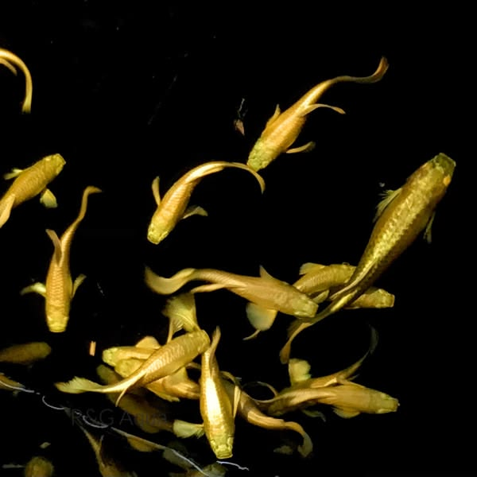
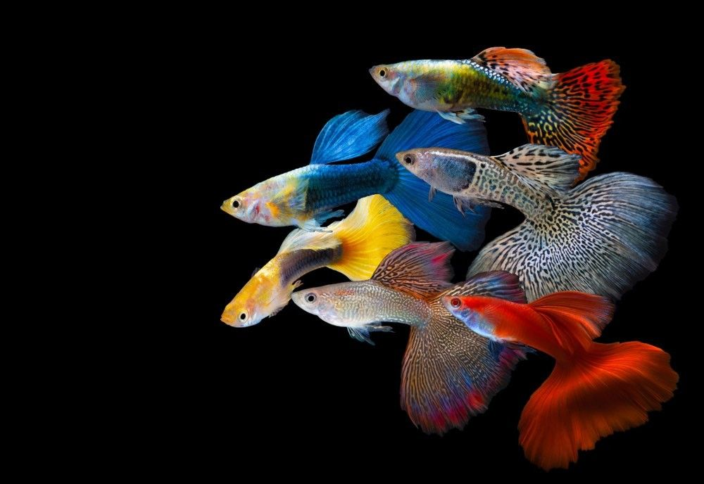
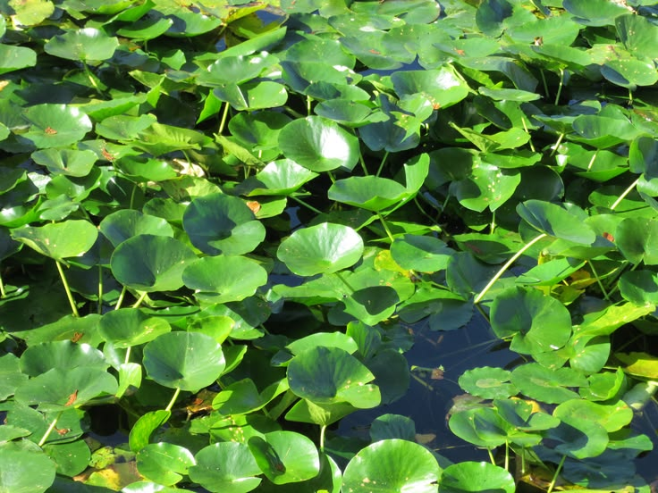

For over a century, serious aquarists have viewed glass aquariums as the undisputed standard for housing pure strain guppies (Poecilia reticulata). However, within high-grade genetic studios, a deeper truth has re-emerged: glass boxes isolate fish from the crucial ecological cues required for peak color expression, fin development, and robust vitality. True genetic potential flourishes when guppies are nurtured within open-air natural ponds and shallow botanical micro-ecosystems.
In an outdoor pond setting, sunlight delivers full-spectrum light rays that synthesize vivid, naturally iridescent iridophores and vibrant carotenoid pigments. Furthermore, natural pond bio-films, live zooplankton, micro-crustaceans, and gentle thermal day-night cycles mirror the native riverways of Trinidad and South America, strengthening the immune constitution of high-end lines far beyond artificial aquarium conditions.

I. The Mechanics of Guppy Inheritance & Line Fixation
Guppy breeding is a discipline of structural genetics, pigment isolation, and strict culling. Every DE'OCEAN lineage—whether liquid snow-white Platinum Dumbo Ears or velvet dark Midnight Moscows—relies on understanding sex-linked and autosomal genetic traits:
1. Sex-Linked Traits (Y-Linked & X-Linked)
Many iconic color patterns reside on the Y-chromosome, passing directly from father to son (such as snake-skin lace patterns and metallic dorsals). Other traits, like fin length and specific caudal shapes, travel on the X-chromosome. Achieving true-breeding lines requires selecting virgin females with verified X-lineage to ensure progeny replicate parent phenotypes with over 90% precision.
2. Pigment Layer Isolation
A guppy’s brilliance depends on three stacked chromatophore layers:
- Melanophores: Dark brown/black velvet undertones (prominent in Moscows).
- Xanthophores & Erythrophores: Yellow, orange, and deep red pigments (fixed in Albino Full Reds).
- Iridophores: Reflective structural guanine crystals that create the liquid mirror effect in Platinum and Metal Lace strains.
In natural ponds, natural solar UV rays activate guanophore crystallization within iridophores, producing metallic sheens that artificial LED strip lights simply cannot replicate.

To maintain zero line contamination, we maintain a 1 Male to 2 Female ratio per tub/pond batch. Fry are separated within 14 days of birth using floating Salvinia micro-barriers, allowing mothers to rest while ensuring zero premature cross-breeding among juvenile males.
II. Natural Pond Construction & Water Conditioning
Creating a high-end outdoor guppy culture setup does not require concrete or expensive glass. In fact, shallow black plastic tubs, terra-cotta basins, or lined natural earth ponds provide vastly superior thermal stability and dark contrasting backgrounds that stimulate deep fish coloration.
1. The Botanical Buffer: Guava Leaves & Organic Tannins
Instead of synthetic chemical buffers, natural outdoor ponds benefit immensely from aged botanicals. Dried guava leaves (Psidium guajava) and Indian Almond leaves release mild tannins, humic acids, and natural anti-bacterial compounds. These botanicals gently lower pH toward a stable 6.8 - 7.4 range while creating protective micro-habitats where newborn fry can forage safely.
2. Natural pH Stabilization with Calcite & Eggshells
Outdoor rain can occasionally cause sudden pH drops. To counter soft rainwater acidity without harsh chemicals, line a small mesh pouch with crushed baked eggshells or natural calcite substrate. This slowly leaches essential calcium and magnesium ions into the water, maintaining an ideal 8–12 dGH mineral hardness for strong caudal fin development.
3. Floating Flora as Living Biological Filters
Mechanical pumps can create harsh currents that shred delicate delta tails. In outdoor ponds, heavy floating vegetation—such as Salvinia natans, Water Lettuce, or Amazon Frogbit—acts as a complete biological filter. Their extensive root networks absorb toxic ammonia, nitrates, and heavy metals, providing pristine water clarity and shaded thermal cover under direct afternoon sunlight.

| Parameter | Indoor Glass Aquarium | Outdoor Botanical Pond |
|---|---|---|
| Light Source | Artificial LED (Flat Spectra) | Full-Spectrum Sunlight (Full Iridophore Activation) |
| Filtration | Power Canister / Sponge Filter | Salvinia & Micro-film Roots (Zero Tail Drag) |
| Water Conditioning | Liquid Dosing Buffers | Guava Leaves & Crushed Eggshells (Natural GH/pH) |
| Immune Response | Moderate (Sterile Environment) | High (Rich Infusoria & Live Micro-fauna) |
III. The Selective Culling Standard
Without strict selection, even the finest strain will regress to wild phenotypes within three generations. At DE'OCEAN, culling is performed at three distinct growth milestones:
- Week 3 (Sex Separation): Juvenile males are separated as soon as gonopodium development appears to prevent uncontrolled mating.
- Month 2 (Finnage Symmetry): Young adults are evaluated for straight dorsal rays and symmetrical caudal expansion. Any bent spines or uneven tails are removed.
- Month 4 (Vault Selection): Only top 5% breeder pairs displaying full color saturation, liquid metallic sheen, and flawless swimming poise are chosen for release in our Private Vault.
By maintaining natural outdoor ponds conditioned with organic botanicals, we deliver guppy trios and pairs equipped with superior natural resilience and unmatched genetic beauty.